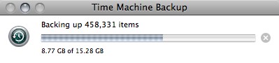
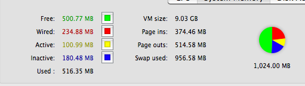
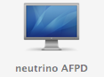
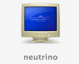

How to backup with time machine on a network share
Ingredients: Debian, Netatalk, Avahi, some trickery.
Step 1: recompile netatalk adding SSL Support: blackmac.de.
You can safely ignore the ”.passwd” stuff, because afpd uses PAM for user authentication.
Hint: disable the atalk protocol handlers in /etc/default/netatalk, for a faster startup:
# Set which daemons to run (papd is dependent upon atalkd):
ATALKD_RUN=no # appletalk protocol
PAPD_RUN=no # printer sharing daemon (printers are soooo '90s)
CNID_METAD_RUN=yes # don't remember but is needed, rtfm!
AFPD_RUN=yes # you will always need this
TIMELORD_RUN=no # my time lord's name is <a href="http://openntpd.org">openntpd</a>
A2BOOT_RUN=no # boot? nah! :P
Step 2: Create a share for time machine backup data, by adding e.g.
# path name perms charset
/some/where/tm "Time Machine" allow:vjt volcharset:"UTF8"
into /etc/netatalk/AppleVolumes.default.
Step 3: Let the AFPD server show up in finder: disgruntled-dutch.com (in a nutshell: download the avahi service file, put it into /etc/avahi/services and reload avahi with /etc/init.d/avahi-daemon reload).
Step 4: You need two files on your afp network share: .com.apple.timemachine.supported and a dot-file named with your en0 MAC address. To create it, the easier way is to attach an USB/Firewire disk, rename it with the name of the intended network share (specified into the AppleVolumes file) and enable time machine on it.
Then, copy over the .00… file on the external disk into your home dir, eject the disk, mount the network share from the finder and copy the file there.
Finally, touch .com.apple.timemachine.supported onto the network share, and re-open time machine preferences: the size of your backup volume should be equal to the network share size :).
You cannot copy both files e.g. via scp and expect it to work: afpd ignores dot-files in shared directories, and dot-files created on the client machine appear as such:
-rw-r--r-- 1 vjt 16 2007-11-02 15:50 :2e000855f00f00 -rw-r--r-- 1 root 0 2007-11-02 15:19 :2ecom.apple.timemachine.supported
because afpd needs the dot-namespace:
drwxr-xr-x 2 vjt 40 2007-11-02 16:02 .AppleDB/
drwxr-xr-x 2 vjt 8 2007-11-02 16:02 .AppleDesktop/
It works:

.. of course with a bit of cache trashing:

Have fun!
PS: yeah, you should be able to use SMB shares too, because the hard link to directories stuff is embedded into a .sparsebundle file created on the network share. An AFP share has the added benefit of being indexable by spotlight (!), not to mention that your Linux server will appear in the finder as a shiny mac:

and not as a crashed windows pc:

:)


About this entry
You’re currently reading “How to backup with time machine on a network share”, an entry on sindro.me
- Published:
- 11.02.07 / 17PM
- Updated:
- 02.19.09 / 18PM
- Sections:
- number 42
- Tags:

3 comments